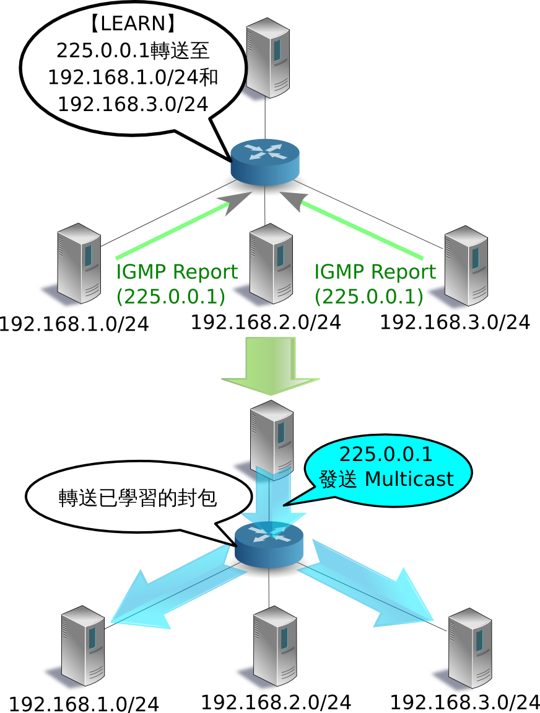
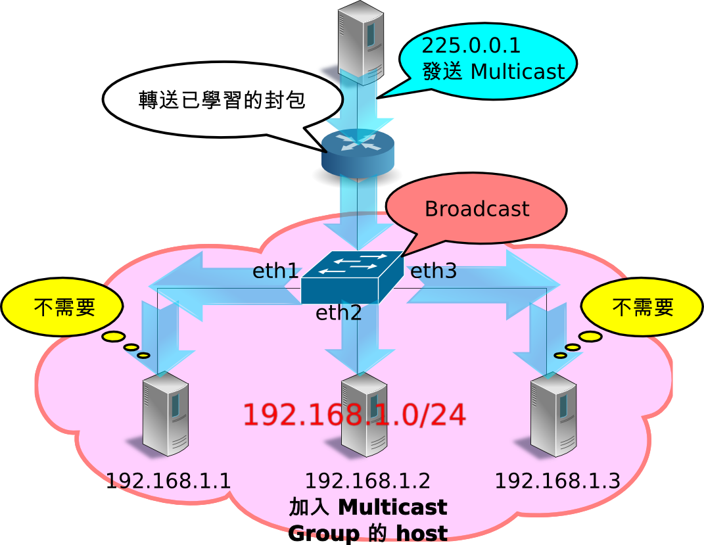
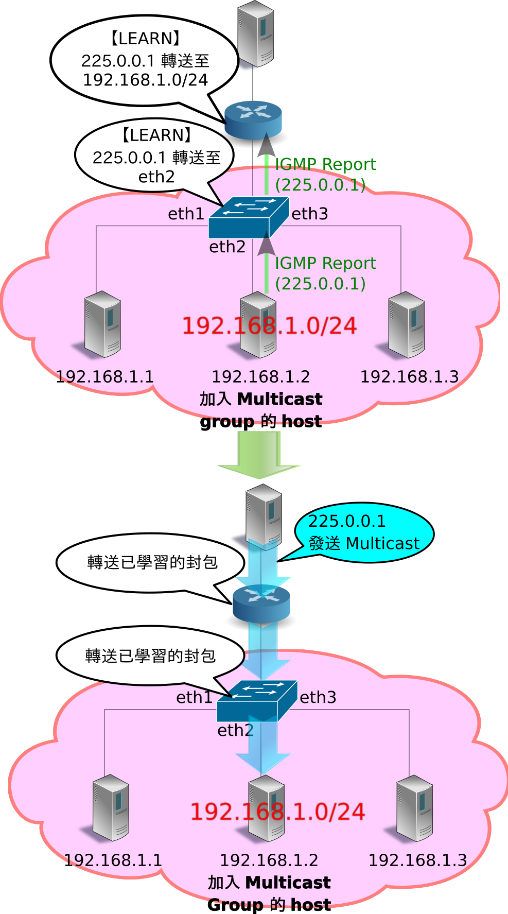

IGMPスヌーピング¶
本章では、Ryuを用いたIGMPスヌーピング機能の実装方法を解説していきます。
IGMPスヌーピング¶
IGMPについて¶
IGMP(Internet Group Management Protocol)は、サブネット間においてマルチキャ ストパケットの宛先を管理するためのプロトコルです。
マルチキャストルータは、そのルータが接続している全サブネットに対し、マルチキャ ストグループ参加ホストが存在するかどうかを定期的に問い合わせます （IGMP Query Message）。マルチキャストグループに参加しているホストがとあるサ ブネット内に存在した場合、そのホストはどのマルチキャストグループに参加している のかをマルチキャストルータに報告します（IGMP Report Message）。マルチキャスト ルータは受信した報告がどのサブネットから送られたのかを記憶し、「どのマルチキャ ストグループ宛のパケットをどのサブネットに向けて転送するか」を決定します。問い 合わせに対する報告がなかったり、あるいは特定のマルチキャストグループから脱退す るというメッセージ（IGMP Leave Message）をホストから受信した場合、マルチキャ ストルータはそのサブネットに対し、すべての、もしくは指定されたマルチキャストグ ループ宛のパケットを転送しなくなります。
この仕組みにより、マルチキャストグループ参加ホストが存在しないサブネットに対し てマルチキャストパケットが送信されることはなくなり、不要なトラフィックを削減す ることができます。
{kind=link}
サブネット内の課題とIGMPスヌーピングについて¶
IGMPを使用することでサブネット単位での不要なトラフィックを削減することができま したが、サブネット内においてはまだ不要なトラフィックが発生する可能性があります。
マルチキャストパケットの宛先MACアドレスは特殊な値であるため、L2スイッチのMAC アドレステーブルで学習されることはなく、常にブロードキャスト対象となります。そ のため、たとえばあるひとつのポートにのみマルチキャストグループ参加ホストが接続 されていたとしても、L2スイッチは受信したマルチキャストパケットを全ポートに転送 してしまいます。
{kind=link}
IGMPスヌーピングは、マルチキャストグループ参加ホストからマルチキャストルータに 送信されるIGMP Report MessageをL2スイッチが覗き見る（snoop）ことでマルチキャ ストパケットの転送先ポートを学習する、という手法です。この手法により、サブネッ ト内においてもマルチキャストグループ参加ホストが存在しないポートに対してマルチ キャストパケットが送信されることはなくなり、不要なトラフィックを削減することが できます。
{kind=link}
IGMPスヌーピングを行うL2スイッチは、複数のホストから同一のマルチキャストグ ループに参加しているというIGMP Report Messageを受信しても、クエリアには1回し かIGMP Report Messageを転送しません。また、あるホストからIGMP Leave Message を受信しても、他に同一のマルチキャストグループに参加しているホストが存在する間 は、クエリアにIGMP Leave Messageを転送しません。これにより、クエリアにはあた かも単一のホストとIGMPメッセージの交換を行っているかのように見せることができ、 また不要なIGMPメッセージの転送を抑制することができます。
Ryuアプリケーションの実行¶
IGMPスヌーピングの機能をOpenFlowを用いて実現した、RyuのIGMPスヌーピングアプリ ケーションを実行してみます。
Ryuのソースツリーに用意されているsimple_switch_igmp.pyはOpenFlow 1.0専用の アプリケーションであるため、ここでは新たにOpenFlow 1.3に対応した simple_switch_igmp_13.pyを作成することとします。このプログラムは、 「 交換器（Switching Hub） 」にIGMPスヌーピング機能を追加したアプリケーショ ンです。なおこのプログラムでは、dpid=0000000000000001のスイッチをマルチキャス トルータとして扱い、そのポート2に接続されているホストをマルチキャストサーバと して扱うよう設定されています。
ソース名： simple_switch_igmp_13.py
from ryu.base import app_manager
from ryu.controller import ofp_event
from ryu.controller.handler import CONFIG_DISPATCHER
from ryu.controller.handler import MAIN_DISPATCHER
from ryu.controller.handler import set_ev_cls
from ryu.ofproto import ofproto_v1_3
from ryu.lib import igmplib
from ryu.lib.dpid import str_to_dpid
from ryu.lib.packet import packet
from ryu.lib.packet import ethernet
class SimpleSwitchIgmp13(app_manager.RyuApp):
OFP_VERSIONS = [ofproto_v1_3.OFP_VERSION]
_CONTEXTS = {'igmplib': igmplib.IgmpLib}
def __init__(self, *args, **kwargs):
super(SimpleSwitchIgmp13, self).__init__(*args, **kwargs)
self.mac_to_port = {}
self._snoop = kwargs['igmplib']
self._snoop.set_querier_mode(
dpid=str_to_dpid('0000000000000001'), server_port=2)
@set_ev_cls(ofp_event.EventOFPSwitchFeatures, CONFIG_DISPATCHER)
def switch_features_handler(self, ev):
datapath = ev.msg.datapath
ofproto = datapath.ofproto
parser = datapath.ofproto_parser
# install table-miss flow entry
#
# We specify NO BUFFER to max_len of the output action due to
# OVS bug. At this moment, if we specify a lesser number, e.g.,
# 128, OVS will send Packet-In with invalid buffer_id and
# truncated packet data. In that case, we cannot output packets
# correctly.
match = parser.OFPMatch()
actions = [parser.OFPActionOutput(ofproto.OFPP_CONTROLLER,
ofproto.OFPCML_NO_BUFFER)]
self.add_flow(datapath, 0, match, actions)
def add_flow(self, datapath, priority, match, actions):
ofproto = datapath.ofproto
parser = datapath.ofproto_parser
inst = [parser.OFPInstructionActions(ofproto.OFPIT_APPLY_ACTIONS,
actions)]
mod = parser.OFPFlowMod(datapath=datapath, priority=priority,
match=match, instructions=inst)
datapath.send_msg(mod)
@set_ev_cls(igmplib.EventPacketIn, MAIN_DISPATCHER)
def _packet_in_handler(self, ev):
msg = ev.msg
datapath = msg.datapath
ofproto = datapath.ofproto
parser = datapath.ofproto_parser
in_port = msg.match['in_port']
pkt = packet.Packet(msg.data)
eth = pkt.get_protocols(ethernet.ethernet)[0]
dst = eth.dst
src = eth.src
dpid = datapath.id
self.mac_to_port.setdefault(dpid, {})
self.logger.info("packet in %s %s %s %s", dpid, src, dst, in_port)
# learn a mac address to avoid FLOOD next time.
self.mac_to_port[dpid][src] = in_port
if dst in self.mac_to_port[dpid]:
out_port = self.mac_to_port[dpid][dst]
else:
out_port = ofproto.OFPP_FLOOD
actions = [parser.OFPActionOutput(out_port)]
# install a flow to avoid packet_in next time
if out_port != ofproto.OFPP_FLOOD:
match = parser.OFPMatch(in_port=in_port, eth_dst=dst)
self.add_flow(datapath, 1, match, actions)
data = None
if msg.buffer_id == ofproto.OFP_NO_BUFFER:
data = msg.data
out = parser.OFPPacketOut(datapath=datapath, buffer_id=msg.buffer_id,
in_port=in_port, actions=actions, data=data)
datapath.send_msg(out)
@set_ev_cls(igmplib.EventMulticastGroupStateChanged,
MAIN_DISPATCHER)
def _status_changed(self, ev):
msg = {
igmplib.MG_GROUP_ADDED: 'Multicast Group Added',
igmplib.MG_MEMBER_CHANGED: 'Multicast Group Member Changed',
igmplib.MG_GROUP_REMOVED: 'Multicast Group Removed',
}
self.logger.info("%s: [%s] querier:[%s] hosts:%s",
msg.get(ev.reason), ev.address, ev.src,
ev.dsts)
註解
以降の例では、マルチキャストパケットの送受信にVLC (http://www.videolan.org/vlc/)を使用します。VLCのインストール、 ならびにストリーム配信用の動画の入手に関しては本稿では解説しません。
実験環境の構築¶
IGMPスヌーピングアプリケーションの動作確認を行う実験環境を構築します。
VMイメージ利用のための環境設定やログイン方法等は「 交換器（Switching Hub） 」 を参照してください。
最初にMininetを利用して下図のようなトポロジを作成します。

mn コマンドのパラメータは以下のようになります。
| パラメータ | 値 | 説明 |
|---|---|---|
| topo | linear,2,3 | 2台のスイッチが直列に接続されているトポロジ (各スイッチに3台のホストが接続される) |
| mac | なし | 自動的にホストのMACアドレスをセットする |
| switch | ovsk | Open vSwitchを使用する |
| controller | remote | OpenFlowコントローラは外部のものを利用する |
| x | なし | xtermを起動する |
実行例は以下のようになります。
ryu@ryu-vm:~$ sudo mn --topo linear,2,3 --mac --switch ovsk --controller remote -x
*** Creating network
*** Adding controller
Unable to contact the remote controller at 127.0.0.1:6633
*** Adding hosts:
h1s1 h1s2 h2s1 h2s2 h3s1 h3s2
*** Adding switches:
s1 s2
*** Adding links:
(h1s1, s1) (h1s2, s2) (h2s1, s1) (h2s2, s2) (h3s1, s1) (h3s2, s2) (s1, s2)
*** Configuring hosts
h1s1 h1s2 h2s1 h2s2 h3s1 h3s2
*** Running terms on localhost:10.0
*** Starting controller
*** Starting 2 switches
s1 s2
*** Starting CLI:
mininet>
netコマンドの実行結果は以下のとおりです。
mininet> net
h1s1 h1s1-eth0:s1-eth1
h1s2 h1s2-eth0:s2-eth1
h2s1 h2s1-eth0:s1-eth2
h2s2 h2s2-eth0:s2-eth2
h3s1 h3s1-eth0:s1-eth3
h3s2 h3s2-eth0:s2-eth3
s1 lo: s1-eth1:h1s1-eth0 s1-eth2:h2s1-eth0 s1-eth3:h3s1-eth0 s1-eth4:s2-eth4
s2 lo: s2-eth1:h1s2-eth0 s2-eth2:h2s2-eth0 s2-eth3:h3s2-eth0 s2-eth4:s1-eth4
c0
mininet>
IGMPバージョンの設定¶
RyuのIGMPスヌーピングアプリケーションはIGMP v1/v2のみサポートしています。各 ホストがIGMP v3を使用しないように設定します。このコマンド入力は、各ホストの xterm上で行ってください。
host: h1s1:
root@ryu-vm:~# echo 2 > /proc/sys/net/ipv4/conf/h1s1-eth0/force_igmp_version
host: h1s2:
root@ryu-vm:~# echo 2 > /proc/sys/net/ipv4/conf/h1s2-eth0/force_igmp_version
host: h2s1:
root@ryu-vm:~# echo 2 > /proc/sys/net/ipv4/conf/h2s1-eth0/force_igmp_version
host: h2s2:
root@ryu-vm:~# echo 2 > /proc/sys/net/ipv4/conf/h2s2-eth0/force_igmp_version
host: h3s1:
root@ryu-vm:~# echo 2 > /proc/sys/net/ipv4/conf/h3s1-eth0/force_igmp_version
host: h3s2:
root@ryu-vm:~# echo 2 > /proc/sys/net/ipv4/conf/h3s2-eth0/force_igmp_version
IPアドレスの設定¶
Mininetによって自動的に割り当てられたIPアドレスでは、すべてのホストが同じサブ ネットに所属しています。異なるサブネットを構築するため、各ホストでIPアドレスを 割り当て直します。
host: h1s1:
root@ryu-vm:~# ip addr del 10.0.0.1/8 dev h1s1-eth0
root@ryu-vm:~# ip addr add 172.16.10.10/24 dev h1s1-eth0
host: h1s2:
root@ryu-vm:~# ip addr del 10.0.0.2/8 dev h1s2-eth0
root@ryu-vm:~# ip addr add 192.168.1.1/24 dev h1s2-eth0
host: h2s1:
root@ryu-vm:~# ip addr del 10.0.0.3/8 dev h2s1-eth0
root@ryu-vm:~# ip addr add 172.16.20.20/24 dev h2s1-eth0
host: h2s2:
root@ryu-vm:~# ip addr del 10.0.0.4/8 dev h2s2-eth0
root@ryu-vm:~# ip addr add 192.168.1.2/24 dev h2s2-eth0
host: h3s1:
root@ryu-vm:~# ip addr del 10.0.0.5/8 dev h3s1-eth0
root@ryu-vm:~# ip addr add 172.16.30.30/24 dev h3s1-eth0
host: h3s2:
root@ryu-vm:~# ip addr del 10.0.0.6/8 dev h3s2-eth0
root@ryu-vm:~# ip addr add 192.168.1.3/24 dev h3s2-eth0
デフォルトゲートウェイの設定¶
各ホストからのIGMPパケットが正常に送信できるよう、デフォルトゲートウェイを設 定します。
host: h1s1:
root@ryu-vm:~# ip route add default via 172.16.10.254
host: h1s2:
root@ryu-vm:~# ip route add default via 192.168.1.254
host: h2s1:
root@ryu-vm:~# ip route add default via 172.16.20.254
host: h2s2:
root@ryu-vm:~# ip route add default via 192.168.1.254
host: h3s1:
root@ryu-vm:~# ip route add default via 172.16.30.254
host: h3s2:
root@ryu-vm:~# ip route add default via 192.168.1.254
OpenFlowバージョンの設定¶
使用するOpenFlowのバージョンを1.3に設定します。このコマンド入力は、スイッチ s1、s2のxterm上で行ってください。
switch: s1 (root):
root@ryu-vm:~# ovs-vsctl set Bridge s1 protocols=OpenFlow13
switch: s2 (root):
root@ryu-vm:~# ovs-vsctl set Bridge s2 protocols=OpenFlow13
スイッチングハブの実行¶
準備が整ったので、冒頭で作成したRyuアプリケーションを実行します。このコマンド 入力は、コントローラc0のxterm上で行ってください。
controller: c0 (root):
root@ryu-vm:~# ryu-manager ./simple_switch_igmp_13.py
loading app ./simple_switch_igmp_13.py
loading app ryu.controller.ofp_handler
loading app ryu.controller.ofp_handler
instantiating app None of IgmpLib
creating context igmplib
instantiating app ./simple_switch_igmp_13.py of SimpleSwitchIgmp13
instantiating app ryu.controller.ofp_handler of OFPHandler
...
起動後すぐにスイッチs1がマルチキャストルータ（IGMP Query Messageを送信するた め、クエリアと呼ばれる）として動作し始めたことを表すログが出力されます。
controller: c0 (root):
...
[querier][INFO] started a querier.
...
クエリアは60秒に1回IGMP Query Messageを全ポートに送信し、IGMP Report Message が返ってきたポートに対してマルチキャストサーバからのマルチキャストパケットを転 送するフローエントリを登録します。
同時に、クエリア以外のスイッチ上でIGMPパケットのスヌーピングが開始されます。
controller: c0 (root):
...
[snoop][INFO] SW=0000000000000002 PORT=4 IGMP received. [QUERY]
...
上記のログは、クエリアであるスイッチs1から送信されたIGMP Query Messageをス イッチs2がポート4で受信したことを表します。スイッチs2は受信した IGMP Query Messageをブロードキャストします。
註解
スヌーピングの準備ができる前にクエリアからの最初のIGMP Query Message が送信されてしまうことがあります。その場合は60秒後に送信される次の IGMP Query Messageをお待ちください。
マルチキャストグループの追加¶
続いて各ホストをマルチキャストグループに参加させます。VLCで特定のマルチキャス トアドレス宛のストリームを再生しようとしたとき、VLCはIGMP Report Messageを送 信します。
ホストh1s2を225.0.0.1グループに参加させる¶
まずはホストh1s2において、マルチキャストアドレス「225.0.0.1」宛のストリームを 再生するよう設定します。VLCはホストh1s2からIGMP Report Messageを送信します。
host: h1s2:
root@ryu-vm:~# vlc-wrapper udp://@225.0.0.1
スイッチs2はホストh1s2からのIGMP Report Messageをポート1で受信し、マルチキャ ストアドレス「225.0.0.1」を受信するグループがポート1の先に存在することを認識 します。
controller: c0 (root):
...
[snoop][INFO] SW=0000000000000002 PORT=1 IGMP received. [REPORT]
Multicast Group Added: [225.0.0.1] querier:[4] hosts:[]
Multicast Group Member Changed: [225.0.0.1] querier:[4] hosts:[1]
[snoop][INFO] SW=0000000000000002 PORT=1 IGMP received. [REPORT]
[snoop][INFO] SW=0000000000000002 PORT=1 IGMP received. [REPORT]
...
上記のログは、スイッチs2にとって
- IGMP Report Messageをポート1で受信したこと
- マルチキャストアドレス「225.0.0.1」を受信するマルチキャストグループの存在を 認識したこと（クエリアがポート4の先に存在すること）
- マルチキャストアドレス「225.0.0.1」を受信するグループの参加ホストがポート1 の先に存在すること
を表しています。VLCは起動時にIGMP Report Messageを3回送信するため、ログもそ のようになっています。
この後、クエリアは60秒に1回IGMP Query Messageを送信し続け、メッセージを受信 したマルチキャストグループ参加ホストh1s2はその都度IGMP Report Messageを送信 します。
controller: c0 (root):
...
[snoop][INFO] SW=0000000000000002 PORT=4 IGMP received. [QUERY]
[snoop][INFO] SW=0000000000000002 PORT=1 IGMP received. [REPORT]
...
この時点でクエリアに登録されているフローエントリを確認してみます。
switch: s1 (root):
root@ryu-vm:~# ovs-ofctl -O openflow13 dump-flows s1
OFPST_FLOW reply (OF1.3) (xid=0x2):
cookie=0x0, duration=827.211s, table=0, n_packets=0, n_bytes=0, priority=65535,ip,in_port=2,nw_dst=225.0.0.1 actions=output:4
cookie=0x0, duration=827.211s, table=0, n_packets=14, n_bytes=644, priority=65535,ip,in_port=4,nw_dst=225.0.0.1 actions=CONTROLLER:65509
cookie=0x0, duration=843.887s, table=0, n_packets=1, n_bytes=46, priority=0 actions=CONTROLLER:65535
クエリアには
- ポート2（マルチキャストサーバ）から225.0.0.1宛のパケットを受信した場合には ポート4（スイッチs2）に転送する
- ポート4（スイッチs2）から225.0.0.1宛のパケットを受信した場合にはPacket-In する
- 「 交換器（Switching Hub） 」と同様のTable-missフローエントリ
の3つのフローエントリが登録されています。
また、スイッチs2に登録されているフローエントリも確認してみます。
switch: s2 (root):
root@ryu-vm:~# ovs-ofctl -O openflow13 dump-flows s2
OFPST_FLOW reply (OF1.3) (xid=0x2):
cookie=0x0, duration=1463.549s, table=0, n_packets=26, n_bytes=1196, priority=65535,ip,in_port=1,nw_dst=225.0.0.1 actions=CONTROLLER:65509
cookie=0x0, duration=1463.548s, table=0, n_packets=0, n_bytes=0, priority=65535,ip,in_port=4,nw_dst=225.0.0.1 actions=output:1
cookie=0x0, duration=1480.221s, table=0, n_packets=26, n_bytes=1096, priority=0 actions=CONTROLLER:65535
スイッチs2には
- ポート1（ホストh1s2）から225.0.0.1宛のパケットを受信した場合にはPacket-In する
- ポート4（クエリア）から225.0.0.1宛のパケットを受信した場合にはポート1（ホス トh1s2）に転送する
- 「 交換器（Switching Hub） 」と同様のTable-missフローエントリ
の3つのフローエントリが登録されています。
ホストh3s2を225.0.0.1グループに参加させる¶
続いてホストh3s2でもマルチキャストアドレス「225.0.0.1」宛のストリームを再生す るよう設定します。VLCはホストh3s2からIGMP Report Messageを送信します。
host: h3s2:
root@ryu-vm:~# vlc-wrapper udp://@225.0.0.1
スイッチs2はホストh3s2からのIGMP Report Messageをポート3で受信し、マルチキャ ストアドレス「225.0.0.1」を受信するグループの参加ホストがポート1の他にポート3 の先にも存在することを認識します。
controller: c0 (root):
...
[snoop][INFO] SW=0000000000000002 PORT=3 IGMP received. [REPORT]
Multicast Group Member Changed: [225.0.0.1] querier:[4] hosts:[1, 3]
[snoop][INFO] SW=0000000000000002 PORT=3 IGMP received. [REPORT]
[snoop][INFO] SW=0000000000000002 PORT=3 IGMP received. [REPORT]
...
この時点でクエリアに登録されているフローエントリを確認してみます。
switch: s1 (root):
root@ryu-vm:~# ovs-ofctl -O openflow13 dump-flows s1
OFPST_FLOW reply (OF1.3) (xid=0x2):
cookie=0x0, duration=1854.016s, table=0, n_packets=0, n_bytes=0, priority=65535,ip,in_port=2,nw_dst=225.0.0.1 actions=output:4
cookie=0x0, duration=1854.016s, table=0, n_packets=31, n_bytes=1426, priority=65535,ip,in_port=4,nw_dst=225.0.0.1 actions=CONTROLLER:65509
cookie=0x0, duration=1870.692s, table=0, n_packets=1, n_bytes=46, priority=0 actions=CONTROLLER:65535
クエリアに登録されているフローエントリには特に変更はありません。
また、スイッチs2に登録されているフローエントリも確認してみます。
switch: s2 (root):
root@ryu-vm:~# ovs-ofctl -O openflow13 dump-flows s2
OFPST_FLOW reply (OF1.3) (xid=0x2):
cookie=0x0, duration=1910.703s, table=0, n_packets=34, n_bytes=1564, priority=65535,ip,in_port=1,nw_dst=225.0.0.1 actions=CONTROLLER:65509
cookie=0x0, duration=162.606s, table=0, n_packets=5, n_bytes=230, priority=65535,ip,in_port=3,nw_dst=225.0.0.1 actions=CONTROLLER:65509
cookie=0x0, duration=162.606s, table=0, n_packets=0, n_bytes=0, priority=65535,ip,in_port=4,nw_dst=225.0.0.1 actions=output:1,output:3
cookie=0x0, duration=1927.375s, table=0, n_packets=35, n_bytes=1478, priority=0 actions=CONTROLLER:65535
スイッチs2には
- ポート1（ホストh1s2）から225.0.0.1宛のパケットを受信した場合にはPacket-In する
- ポート3（ホストh3s2）から225.0.0.1宛のパケットを受信した場合にはPacket-In する
- ポート4（クエリア）から225.0.0.1宛のパケットを受信した場合にはポート1（ホス トh1s2）およびポート3（ホストh3s2）に転送する
- 「 交換器（Switching Hub） 」と同様のTable-missフローエントリ
の4つのフローエントリが登録されています。
ホストh2s2を225.0.0.2グループに参加させる¶
次に、ホストh2s2では他のホストとは異なるマルチキャストアドレス「225.0.0.2」 宛のストリームを再生するよう設定します。VLCはホストh2s2から IGMP Report Messageを送信します。
host: h2s2:
root@ryu-vm:~# vlc-wrapper udp://@225.0.0.2
スイッチs2はホストh2s2からのIGMP Report Messageをポート2で受信し、マルチキャ ストアドレス「225.0.0.2」を受信するグループの参加ホストがポート2の先に存在す ることを認識します。
controller: c0 (root):
...
[snoop][INFO] SW=0000000000000002 PORT=2 IGMP received. [REPORT]
Multicast Group Added: [225.0.0.2] querier:[4] hosts:[]
Multicast Group Member Changed: [225.0.0.2] querier:[4] hosts:[2]
[snoop][INFO] SW=0000000000000002 PORT=2 IGMP received. [REPORT]
[snoop][INFO] SW=0000000000000002 PORT=2 IGMP received. [REPORT]
...
この時点でクエリアに登録されているフローエントリを確認してみます。
switch: s1 (root):
root@ryu-vm:~# ovs-ofctl -O openflow13 dump-flows s1
OFPST_FLOW reply (OF1.3) (xid=0x2):
cookie=0x0, duration=2289.168s, table=0, n_packets=0, n_bytes=0, priority=65535,ip,in_port=2,nw_dst=225.0.0.1 actions=output:4
cookie=0x0, duration=108.374s, table=0, n_packets=2, n_bytes=92, priority=65535,ip,in_port=4,nw_dst=225.0.0.2 actions=CONTROLLER:65509
cookie=0x0, duration=108.375s, table=0, n_packets=0, n_bytes=0, priority=65535,ip,in_port=2,nw_dst=225.0.0.2 actions=output:4
cookie=0x0, duration=2289.168s, table=0, n_packets=38, n_bytes=1748, priority=65535,ip,in_port=4,nw_dst=225.0.0.1 actions=CONTROLLER:65509
cookie=0x0, duration=2305.844s, table=0, n_packets=2, n_bytes=92, priority=0 actions=CONTROLLER:65535
クエリアには
- ポート2（マルチキャストサーバ）から225.0.0.1宛のパケットを受信した場合には ポート4（スイッチs2）に転送する
- ポート4（スイッチs2）から225.0.0.2宛のパケットを受信した場合にはPacket-In する
- ポート2（マルチキャストサーバ）から225.0.0.2宛のパケットを受信した場合には ポート4（スイッチs2）に転送する
- ポート4（スイッチs2）から225.0.0.1宛のパケットを受信した場合にはPacket-In する
- 「 交換器（Switching Hub） 」と同様のTable-missフローエントリ
の5つのフローエントリが登録されています。
また、スイッチs2に登録されているフローエントリも確認してみます。
switch: s2 (root):
root@ryu-vm:~# ovs-ofctl -O openflow13 dump-flows s2
OFPST_FLOW reply (OF1.3) (xid=0x2):
cookie=0x0, duration=2379.973s, table=0, n_packets=41, n_bytes=1886, priority=65535,ip,in_port=1,nw_dst=225.0.0.1 actions=CONTROLLER:65509
cookie=0x0, duration=199.178s, table=0, n_packets=0, n_bytes=0, priority=65535,ip,in_port=4,nw_dst=225.0.0.2 actions=output:2
cookie=0x0, duration=631.876s, table=0, n_packets=12, n_bytes=552, priority=65535,ip,in_port=3,nw_dst=225.0.0.1 actions=CONTROLLER:65509
cookie=0x0, duration=199.178s, table=0, n_packets=5, n_bytes=230, priority=65535,ip,in_port=2,nw_dst=225.0.0.2 actions=CONTROLLER:65509
cookie=0x0, duration=631.876s, table=0, n_packets=0, n_bytes=0, priority=65535,ip,in_port=4,nw_dst=225.0.0.1 actions=output:1,output:3
cookie=0x0, duration=2396.645s, table=0, n_packets=43, n_bytes=1818, priority=0 actions=CONTROLLER:65535
スイッチs2には
- ポート1（ホストh1s2）から225.0.0.1宛のパケットを受信した場合にはPacket-In する
- ポート4（クエリア）から225.0.0.2宛のパケットを受信した場合にはポート2（ホス トh2s2）に転送する
- ポート3（ホストh3s2）から225.0.0.1宛のパケットを受信した場合にはPacket-In する
- ポート2（ホストh2s2）から225.0.0.2宛のパケットを受信した場合にはPacket-In する
- ポート4（クエリア）から225.0.0.1宛のパケットを受信した場合にはポート1（ホス トh1s2）およびポート3（ホストh3s2）に転送する
- 「 交換器（Switching Hub） 」と同様のTable-missフローエントリ
の6つのフローエントリが登録されています。
ホストh3s1を225.0.0.1グループに参加させる¶
また、ホストh3s1でもマルチキャストアドレス「225.0.0.1」宛のストリームを再生す るよう設定します。VLCはホストh3s1からIGMP Report Messageを送信します。
host: h3s1:
root@ryu-vm:~# vlc-wrapper udp://@225.0.0.1
ホストh3s1はスイッチs2とは接続していません。したがって、IGMPスヌーピング機能 の対象とはならず、クエリアとの間で通常のIGMPパケットのやりとりを行います。
この時点でクエリアに登録されているフローエントリを確認してみます。
switch: s1 (root):
root@ryu-vm:~# ovs-ofctl -O openflow13 dump-flows s1
OFPST_FLOW reply (OF1.3) (xid=0x2):
cookie=0x0, duration=12.85s, table=0, n_packets=0, n_bytes=0, priority=65535,ip,in_port=2,nw_dst=225.0.0.1 actions=output:3,output:4
cookie=0x0, duration=626.33s, table=0, n_packets=10, n_bytes=460, priority=65535,ip,in_port=4,nw_dst=225.0.0.2 actions=CONTROLLER:65509
cookie=0x0, duration=12.85s, table=0, n_packets=1, n_bytes=46, priority=65535,ip,in_port=3,nw_dst=225.0.0.1 actions=CONTROLLER:65509
cookie=0x0, duration=626.331s, table=0, n_packets=0, n_bytes=0, priority=65535,ip,in_port=2,nw_dst=225.0.0.2 actions=output:4
cookie=0x0, duration=2807.124s, table=0, n_packets=46, n_bytes=2116, priority=65535,ip,in_port=4,nw_dst=225.0.0.1 actions=CONTROLLER:65509
cookie=0x0, duration=2823.8s, table=0, n_packets=3, n_bytes=138, priority=0 actions=CONTROLLER:65535
クエリアには
- ポート2（マルチキャストサーバ）から225.0.0.1宛のパケットを受信した場合には ポート3（h3s1）およびポート4（スイッチs2）に転送する
- ポート4（スイッチs2）から225.0.0.2宛のパケットを受信した場合にはPacket-In する
- ポート3（h3s1）から225.0.0.1宛のパケットを受信した場合にはPacket-Inする
- ポート2（マルチキャストサーバ）から225.0.0.2宛のパケットを受信した場合には ポート4（スイッチs2）に転送する
- ポート4（スイッチs2）から225.0.0.1宛のパケットを受信した場合にはPacket-In する
- 「 交換器（Switching Hub） 」と同様のTable-missフローエントリ
の6つのフローエントリが登録されています。
ストリーム配信の開始¶
マルチキャストサーバであるホストh2s1からストリーム配信を開始します。マルチキャ ストアドレスには「225.0.0.1」を使用することとします。
host: h2s1:
root@ryu-vm:~# vlc-wrapper sample.mov --sout udp:225.0.0.1 --loop
すると、「225.0.0.1」のマルチキャストグループに参加しているh1s2、h3s2、h1s3 の各ホストで実行しているVLCに、マルチキャストサーバで配信している動画が再生さ れます。「225.0.0.2」に参加しているh2s2では動画は再生されません。
マルチキャストグループの削除¶
続いて各ホストをマルチキャストグループから離脱させます。ストリーム再生中のVLC を終了したとき、VLCはIGMP Leave Messageを送信します。
ホストh1s2を225.0.0.1グループから離脱させる¶
ホストh1s2で実行中のVLCをCtrl+Cなどで終了させます。スイッチs2はホストh1s2か らのIGMP Leave Messageをポート1で受信し、マルチキャストアドレス「225.0.0.1」 を受信するグループの参加ホストがポート1の先に存在しなくなったことを認識します。
controller: c0 (root):
...
[snoop][INFO] SW=0000000000000002 PORT=1 IGMP received. [LEAVE]
Multicast Group Member Changed: [225.0.0.1] querier:[4] hosts:[3]
...
上記のログは、スイッチs2にとって
- ポート1からIGMP Leave Messageを受信したこと
- マルチキャストアドレス「225.0.0.1」を受信するグループの参加ホストがポート3 の先に存在すること
を表しています。IGMP Leave Message受信前まではマルチキャストアドレス 「225.0.0.1」を受信するグループの参加ホストはポート1とポート3の先に存在すると 認識していましたが、IGMP Leave Message受信によりポート1が対象外となっていま す。
この時点でクエリアに登録されているフローエントリを確認してみます。
switch: s1 (root):
root@ryu-vm:~# ovs-ofctl -O openflow13 dump-flows s1
OFPST_FLOW reply (OF1.3) (xid=0x2):
cookie=0x0, duration=1565.13s, table=0, n_packets=1047062, n_bytes=1421910196, priority=65535,ip,in_port=2,nw_dst=225.0.0.1 actions=output:3,output:4
cookie=0x0, duration=2178.61s, table=0, n_packets=36, n_bytes=1656, priority=65535,ip,in_port=4,nw_dst=225.0.0.2 actions=CONTROLLER:65509
cookie=0x0, duration=1565.13s, table=0, n_packets=27, n_bytes=1242, priority=65535,ip,in_port=3,nw_dst=225.0.0.1 actions=CONTROLLER:65509
cookie=0x0, duration=2178.611s, table=0, n_packets=0, n_bytes=0, priority=65535,ip,in_port=2,nw_dst=225.0.0.2 actions=output:4
cookie=0x0, duration=4359.404s, table=0, n_packets=72, n_bytes=3312, priority=65535,ip,in_port=4,nw_dst=225.0.0.1 actions=CONTROLLER:65509
cookie=0x0, duration=4376.08s, table=0, n_packets=3, n_bytes=138, priority=0 actions=CONTROLLER:65535
クエリアに登録されているフローエントリには特に変更はありません。
また、スイッチs2に登録されているフローエントリも確認してみます。
switch: s2 (root):
root@ryu-vm:~# ovs-ofctl -O openflow13 dump-flows s2
OFPST_FLOW reply (OF1.3) (xid=0x2):
cookie=0x0, duration=2228.528s, table=0, n_packets=0, n_bytes=0, priority=65535,ip,in_port=4,nw_dst=225.0.0.2 actions=output:2
cookie=0x0, duration=2661.226s, table=0, n_packets=46, n_bytes=2116, priority=65535,ip,in_port=3,nw_dst=225.0.0.1 actions=CONTROLLER:65509
cookie=0x0, duration=2228.528s, table=0, n_packets=39, n_bytes=1794, priority=65535,ip,in_port=2,nw_dst=225.0.0.2 actions=CONTROLLER:65509
cookie=0x0, duration=548.063s, table=0, n_packets=486571, n_bytes=660763418, priority=65535,ip,in_port=4,nw_dst=225.0.0.1 actions=output:3
cookie=0x0, duration=4425.995s, table=0, n_packets=78, n_bytes=3292, priority=0 actions=CONTROLLER:65535
スイッチs2には
- ポート4（クエリア）から225.0.0.2宛のパケットを受信した場合にはポート2（ホス トh2s2）に転送する
- ポート3（ホストh3s2）から225.0.0.1宛のパケットを受信した場合にはPacket-In する
- ポート2（ホストh2s2）から225.0.0.2宛のパケットを受信した場合にはPacket-In する
- ポート4（クエリア）から225.0.0.1宛のパケットを受信した場合にはポート3（ホス トh3s2）に転送する
- 「 交換器（Switching Hub） 」と同様のTable-missフローエントリ
の5つのフローエントリが登録されています。先ほどまでと比べて、
- ポート1（ホストh1s2）から225.0.0.1宛のパケットを受信した場合にはPacket-In する
のフローエントリが削除されており、またクエリアからの225.0.0.1宛パケットの転送 先からポート1（ホストh1s2）が除外されていることがわかります。
ホストh3s2を225.0.0.1グループから離脱させる¶
次に、ホストh3s2で実行中のVLCをCtrl+Cなどで終了させます。スイッチs2はホスト h3s2からのIGMP Leave Messageをポート3で受信し、マルチキャストアドレス 「225.0.0.1」を受信するグループの参加ホストがポート3の先に存在しなくなったこ とを認識します。
controller: c0 (root):
...
[snoop][INFO] SW=0000000000000002 PORT=3 IGMP received. [LEAVE]
Multicast Group Removed: [225.0.0.1] querier:[4] hosts:[]
...
上記のログは、スイッチs2にとって
- ポート3からIGMP Leave Messageを受信したこと
- マルチキャストアドレス「225.0.0.1」を受信するグループの参加ホストがすべて 存在しなくなったこと
を表しています。
この時点でクエリアに登録されているフローエントリを確認してみます。
switch: s1 (root):
root@ryu-vm:~# ovs-ofctl -O openflow13 dump-flows s1
OFPST_FLOW reply (OF1.3) (xid=0x2):
cookie=0x0, duration=89.891s, table=0, n_packets=79023, n_bytes=107313234, priority=65535,ip,in_port=2,nw_dst=225.0.0.1 actions=output:3
cookie=0x0, duration=3823.61s, table=0, n_packets=64, n_bytes=2944, priority=65535,ip,in_port=4,nw_dst=225.0.0.2 actions=CONTROLLER:65509
cookie=0x0, duration=3210.139s, table=0, n_packets=55, n_bytes=2530, priority=65535,ip,in_port=3,nw_dst=225.0.0.1 actions=CONTROLLER:65509
cookie=0x0, duration=3823.467s, table=0, n_packets=0, n_bytes=0, priority=65535,ip,in_port=2,nw_dst=225.0.0.2 actions=output:4
cookie=0x0, duration=6021.089s, table=0, n_packets=4, n_bytes=184, priority=0 actions=CONTROLLER:65535
クエリアには
- ポート2（マルチキャストサーバ）から225.0.0.1宛のパケットを受信した場合には ポート3（h3s1）に転送する
- ポート4（スイッチs2）から225.0.0.2宛のパケットを受信した場合にはPacket-In する
- ポート3（h3s1）から225.0.0.1宛のパケットを受信した場合にはPacket-Inする
- ポート2（マルチキャストサーバ）から225.0.0.2宛のパケットを受信した場合には ポート4（スイッチs2）に転送する
- 「 交換器（Switching Hub） 」と同様のTable-missフローエントリ
の5つのフローエントリが登録されています。先ほどまでと比べて、
- ポート4（スイッチs2）から225.0.0.1宛のパケットを受信した場合にはPacket-In する
のフローエントリが削除されており、またマルチキャストサーバからの225.0.0.1宛パ ケットの転送先からポート4（スイッチs2）が除外されていることがわかります。
また、スイッチs2に登録されているフローエントリも確認してみます。
switch: s2 (root):
root@ryu-vm:~# ovs-ofctl -O openflow13 dump-flows s2
OFPST_FLOW reply (OF1.3) (xid=0x2):
cookie=0x0, duration=4704.052s, table=0, n_packets=0, n_bytes=0, priority=65535,ip,in_port=4,nw_dst=225.0.0.2 actions=output:2
cookie=0x0, duration=4704.053s, table=0, n_packets=53, n_bytes=2438, priority=65535,ip,in_port=2,nw_dst=225.0.0.2 actions=CONTROLLER:65509
cookie=0x0, duration=6750.068s, table=0, n_packets=115, n_bytes=29870, priority=0 actions=CONTROLLER:65535
スイッチs2には
- ポート4（クエリア）から225.0.0.2宛のパケットを受信した場合にはポート2（ホス トh2s2）に転送する
- ポート2（ホストh2s2）から225.0.0.2宛のパケットを受信した場合にはPacket-In する
- 「 交換器（Switching Hub） 」と同様のTable-missフローエントリ
の3つのフローエントリが登録されています。先ほどまでと比べて、
- ポート3（ホストh3s2）から225.0.0.1宛のパケットを受信した場合にはPacket-In する
- ポート4（クエリア）から225.0.0.1宛のパケットを受信した場合にはポート3（ホス トh3s2）に転送する
のフローエントリが削除されていることがわかります。
RyuによるIGMPスヌーピング機能の実装¶
OpenFlowを用いてどのようにIGMPスヌーピング機能を実現しているかを見ていきます。
IGMPスヌーピングの「IGMPパケットを覗き見る」という動作は、OpenFlowのPacket-In メッセージを使用して実装しています。Packet-Inメッセージでコントローラに送信さ れたIGMPパケットの内容を、
- どのグループに関するIGMPメッセージなのか
- IGMP Report MessageなのかIGMP Leave Messageなのか
- スイッチのどのポートで受信したIGMPメッセージなのか
という観点から分析し、それに応じた処理を行います。
プログラムは、マルチキャストアドレスと、そのマルチキャストアドレス宛のパケット をどのポートに転送するかの対応表を保持します。
IGMP Report Messageを受信した際、それが対応表に存在しないポートからのもので あれば、そのマルチキャストアドレス宛のパケットをそのポートに転送するフローエン トリを登録します。
IGMP Leave Messageを受信した際、それが対応表に存在するポートからのものであれ ば、確認用のIGMP Query Messageを送信し、応答がなければそのマルチキャストアド レス宛のパケットをそのポートに転送するフローエントリを削除します。
IGMP Leave Messageを送信せずにマルチキャストグループ参加ホストが不在となった 場合を考慮し、クエリアからのIGMP Query Messageを転送する都度、各ポートから IGMP Report Messageが返ってきたかどうかを確認します。IGMP Report Messageを 返信しなかったポートの先にはマルチキャストグループ参加ホストが存在しないものと みなし、マルチキャストパケットをそのポートに転送するフローエントリを削除します。
あるマルチキャストグループに対するIGMP Report Messageを複数のポートで受信し た場合、プログラムは最初のメッセージのみクエリアに転送します。これにより、不要 なIGMP Report Messageをクエリアに転送することを抑制します。
あるマルチキャストグループに対するIGMP Leave Messageを受信した場合、そのグ ループに参加しているホストが他のポートの先に存在するのであれば、プログラムは IGMP Leave Messageをクエリアに転送しません。そのグループに参加しているホスト がひとつもなくなったときに、プログラムはIGMP Leave Messageをクエリアに転送し ます。これにより、不要なIGMP Leave Messageをクエリアに転送することを抑制しま す。
また、クエリアであるマルチキャストルータが存在しないネットワークにおいてもIGMP スヌーピング機能が動作できるよう、擬似クエリア機能も実装することとします。
以上の内容を、IGMPスヌーピング機能を包括的に実装するIGMPスヌーピングライブラリ と、ライブラリを使用するアプリケーションに分けて実装します。
IGMPスヌーピングライブラリ
- スヌーピング機能
- IGMP Query Messageを受信したら保持している応答有無の情報を初期化し、 IGMP Report Messageを待つ
- IGMP Report Messageを受信したら対応表を更新し、必要であればフローエントリ の登録を行う。また必要であればクエリアにメッセージを転送する
- IGMP Leave Messageを受信したら確認用のIGMP Query Messageを送信し、応答 がなければフローエントリの削除を行う。また必要であればクエリアにメッセージ を転送する
- 保持している対応表が更新された際、その旨をアプリケーションに通知するため、 イベントを送信する
- 擬似クエリア機能
- 定期的にIGMP Query Messageをフラッディングし、IGMP Report Messageを待つ
- IGMP Report Messageを受信したらフローエントリの登録を行う
- IGMP Leave Messageを受信したらフローエントリの削除を行う
アプリケーション
- IGMPスヌーピングライブラリからの通知を受け、ログを出力する
- IGMPパケット以外のパケットは従来どおり学習・転送する
IGMPスヌーピングライブラリおよびアプリケーションのソースコードは、Ryuのソース ツリーにあります。
ryu/lib/igmplib.py
ryu/app/simple_switch_igmp.py
註解
simple_switch_igmp.pyはOpenFlow 1.0専用のアプリケーション であるため、本章では「 Ryuアプリケーションの実行 」に示した OpenFlow 1.3に対応したsimple_switch_igmp_13.pyを元にアプリケーションの 詳細を説明します。
IGMPスヌーピングライブラリの実装¶
以降の節で、前述の機能がIGMPスヌーピングライブラリにおいてどのように実装され ているかを見ていきます。なお、引用されているソースは抜粋です。全体像については 実際のソースをご参照ください。
スヌーピングクラスと擬似クエリアクラス¶
ライブラリの初期化時に、スヌーピングクラスと擬似クエリアクラスをインスタンス化 します。
def __init__(self):
"""initialization."""
super(IgmpLib, self).__init__()
self.name = 'igmplib'
self._querier = IgmpQuerier()
self._snooper = IgmpSnooper(self.send_event_to_observers)
擬似クエリアインスタンスへの、クエリアとして動作するスイッチの設定とマルチキャ ストサーバの接続されているポートの設定は、ライブラリのメソッドで行います。
def set_querier_mode(self, dpid, server_port):
"""set a datapath id and server port number to the instance
of IgmpQuerier.
============ ==================================================
Attribute Description
============ ==================================================
dpid the datapath id that will operate as a querier.
server_port the port number linked to the multicasting server.
============ ==================================================
"""
self._querier.set_querier_mode(dpid, server_port)
擬似クエリアインスタンスにスイッチとポート番号が指定されている場合、指定された スイッチがアプリケーションと接続した際に擬似クエリア処理を開始します。
@set_ev_cls(ofp_event.EventOFPStateChange,
[MAIN_DISPATCHER, DEAD_DISPATCHER])
def state_change_handler(self, evt):
"""StateChange event handler."""
datapath = evt.datapath
assert datapath is not None
if datapath.id == self._querier.dpid:
if evt.state == MAIN_DISPATCHER:
self._querier.start_loop(datapath)
elif evt.state == DEAD_DISPATCHER:
self._querier.stop_loop()
Packet-In処理¶
「 網路聚合（Link Aggregation） 」と同様に、IGMPパケットはすべてIGMPスヌーピ ングライブラリで処理します。IGMPパケットを受信したスイッチが擬似クエリアインス タンスに設定したスイッチである場合には擬似クエリアインスタンスに、それ以外の場 合はスヌーピングインスタンスに、それぞれ処理を委ねます。
@set_ev_cls(ofp_event.EventOFPPacketIn, MAIN_DISPATCHER)
def packet_in_handler(self, evt):
"""PacketIn event handler. when the received packet was IGMP,
proceed it. otherwise, send a event."""
msg = evt.msg
dpid = msg.datapath.id
req_pkt = packet.Packet(msg.data)
req_igmp = req_pkt.get_protocol(igmp.igmp)
if req_igmp:
if self._querier.dpid == dpid:
self._querier.packet_in_handler(req_igmp, msg)
else:
self._snooper.packet_in_handler(req_pkt, req_igmp, msg)
else:
self.send_event_to_observers(EventPacketIn(msg))
スヌーピングインスタンスのPacket-In処理では、受信したIGMPパケットの種別に応じ て処理を行います。
def packet_in_handler(self, req_pkt, req_igmp, msg):
# ...
if igmp.IGMP_TYPE_QUERY == req_igmp.msgtype:
self.logger.info(log + "[QUERY]")
(req_ipv4, ) = req_pkt.get_protocols(ipv4.ipv4)
(req_eth, ) = req_pkt.get_protocols(ethernet.ethernet)
self._do_query(req_igmp, req_ipv4, req_eth, in_port, msg)
elif (igmp.IGMP_TYPE_REPORT_V1 == req_igmp.msgtype or
igmp.IGMP_TYPE_REPORT_V2 == req_igmp.msgtype):
self.logger.info(log + "[REPORT]")
self._do_report(req_igmp, in_port, msg)
elif igmp.IGMP_TYPE_LEAVE == req_igmp.msgtype:
self.logger.info(log + "[LEAVE]")
self._do_leave(req_igmp, in_port, msg)
# ...
擬似クエリアインスタンスのPacket-In処理でも、受信したIGMPパケットの種別に応 じて処理を行います。
def packet_in_handler(self, req_igmp, msg):
# ...
if (igmp.IGMP_TYPE_REPORT_V1 == req_igmp.msgtype or
igmp.IGMP_TYPE_REPORT_V2 == req_igmp.msgtype):
self._do_report(req_igmp, in_port, msg)
elif igmp.IGMP_TYPE_LEAVE == req_igmp.msgtype:
self._do_leave(req_igmp, in_port, msg)
スヌーピングインスタンスでのIGMP Query Message処理¶
スヌーピングインスタンスには、スイッチごとに「クエリアと接続しているポート」 「クエリアのIPアドレス」「クエリアのMACアドレス」を保持する領域があります。ま た各スイッチごとに「既知のマルチキャストグループ」「当該マルチキャストグループ に参加しているホストが接続しているポート番号」「メッセージ受信の有無」を保持す る領域があります。
スヌーピングインスタンスは、IGMP Query Message受信時、メッセージを送信してき たクエリアの情報を保持します。
また、各スイッチのメッセージ受信の有無を初期化し、受信したIGMP Query Message をフラッディングした後、マルチキャストグループ参加ホストからの IGMP Report Message受信タイムアウト処理を行います。
def _do_query(self, query, iph, eth, in_port, msg):
# ...
# learn the querier.
self._to_querier[dpid] = {
'port': in_port,
'ip': iph.src,
'mac': eth.src
}
# ...
if '0.0.0.0' == query.address:
# general query. reset all reply status.
for group in self._to_hosts[dpid].values():
group['replied'] = False
group['leave'] = None
# ...
actions = [parser.OFPActionOutput(ofproto.OFPP_FLOOD)]
self._do_packet_out(
datapath, msg.data, in_port, actions)
# wait for REPORT messages.
hub.spawn(self._do_timeout_for_query, timeout, datapath)
スヌーピングインスタンスでのIGMP Report Message処理¶
スヌーピングインスタンスは、マルチキャストグループ参加ホストからの IGMP Report Messageを受信した際、そのマルチキャストアドレスが未知のものであ れば、マルチキャストグループ追加イベントを送信し、情報保持領域を更新します。
また、当該マルチキャストグループへのIGMP Report Messageをそのポートで初めて 受信した場合には、情報保持領域を更新し、当該マルチキャストパケットの転送先とし てそのポートを追加したフローエントリを登録し、マルチキャストグループ変更イベン トを送信します。
当該マルチキャストグループのIGMP Report Messageをまだクエリアに転送していな ければ転送を行います。
def _do_report(self, report, in_port, msg):
# ...
if not self._to_hosts[dpid].get(report.address):
self._send_event(
EventMulticastGroupStateChanged(
MG_GROUP_ADDED, report.address, outport, []))
self._to_hosts[dpid].setdefault(
report.address,
{'replied': False, 'leave': None, 'ports': {}})
# ...
if not self._to_hosts[dpid][report.address]['ports'].get(
in_port):
self._to_hosts[dpid][report.address]['ports'][
in_port] = {'out': False, 'in': False}
self._set_flow_entry(
datapath,
[parser.OFPActionOutput(ofproto.OFPP_CONTROLLER, size)],
in_port, report.address)
if not self._to_hosts[dpid][report.address]['ports'][
in_port]['out']:
self._to_hosts[dpid][report.address]['ports'][
in_port]['out'] = True
# ...
if not self._to_hosts[dpid][report.address]['ports'][
in_port]['in']:
actions = []
ports = []
for port in self._to_hosts[dpid][report.address]['ports']:
actions.append(parser.OFPActionOutput(port))
ports.append(port)
self._send_event(
EventMulticastGroupStateChanged(
MG_MEMBER_CHANGED, report.address, outport, ports))
self._set_flow_entry(
datapath, actions, outport, report.address)
self._to_hosts[dpid][report.address]['ports'][
in_port]['in'] = True
# send a REPORT message to the querier if this message arrived
# first after a QUERY message was sent.
if not self._to_hosts[dpid][report.address]['replied']:
actions = [parser.OFPActionOutput(outport, size)]
self._do_packet_out(datapath, msg.data, in_port, actions)
self._to_hosts[dpid][report.address]['replied'] = True
スヌーピングインスタンスでのIGMP Report Message受信タイムアウト処理¶
IGMP Query Message処理後、一定時間後にIGMP Report Message受信タイムアウト処 理を開始します。マルチキャストグループ参加ホストが存在しているのであれば、通常 はタイムアウト発生前にIGMP Report Messageを送信してくるため、 IGMP Report Message処理にて情報保持領域の更新が行われます。
一定時間経過した後でもまだ特定のマルチキャストグループに関する IGMP Report Messageを受信していなかった場合、当該マルチキャストグループに参加 するホストがいなくなったものとみなし、マルチキャストグループ削除イベントの送信、 フローエントリの削除、情報保持領域の更新を行います。
def _do_timeout_for_query(self, timeout, datapath):
# ...
hub.sleep(timeout)
# ...
remove_dsts = []
for dst in self._to_hosts[dpid]:
if not self._to_hosts[dpid][dst]['replied']:
# if no REPORT message sent from any members of
# the group, remove flow entries about the group and
# send a LEAVE message if exists.
self._remove_multicast_group(datapath, outport, dst)
remove_dsts.append(dst)
for dst in remove_dsts:
del self._to_hosts[dpid][dst]
def _remove_multicast_group(self, datapath, outport, dst):
# ...
self._send_event(
EventMulticastGroupStateChanged(
MG_GROUP_REMOVED, dst, outport, []))
self._del_flow_entry(datapath, outport, dst)
for port in self._to_hosts[dpid][dst]['ports']:
self._del_flow_entry(datapath, port, dst)
#...
スヌーピングインスタンスでのIGMP Leave Message処理¶
スヌーピングインスタンスは、マルチキャストグループ参加ホストからの IGMP Leave Messageを受信した際、情報保持領域に受信したメッセージを保存した後 確認用のIGMP Query Messageを受信したポートに向けて送信し、マルチキャストグ ループ参加ホストからのIGMP Report Message(Leave応答)受信タイムアウト処理を行 います。
def _do_leave(self, leave, in_port, msg):
# ...
self._to_hosts.setdefault(dpid, {})
self._to_hosts[dpid].setdefault(
leave.address,
{'replied': False, 'leave': None, 'ports': {}})
self._to_hosts[dpid][leave.address]['leave'] = msg
self._to_hosts[dpid][leave.address]['ports'][in_port] = {
'out': False, 'in': False}
# ...
# send a specific query to the host that sent this message.
actions = [parser.OFPActionOutput(ofproto.OFPP_IN_PORT)]
self._do_packet_out(datapath, res_pkt.data, in_port, actions)
# wait for REPORT messages.
hub.spawn(self._do_timeout_for_leave, timeout, datapath,
leave.address, in_port)
スヌーピングインスタンスでのIGMP Report Message(Leave応答)受信タイムアウト処理¶
IGMP Leave Message処理中でのIGMP Query Message送信後、一定時間後に IGMP Report Message受信タイムアウト処理を開始します。マルチキャストグループ 参加ホストが存在しているのであれば、通常はタイムアウト発生前に IGMP Report Messageを送信してくるため、情報保持領域の更新は行われません。
一定時間経過した後でもまだ特定のマルチキャストグループに関する IGMP Report Messageを受信していなかった場合、そのポートの先には当該マルチキャ ストグループに参加するホストがいなくなったものとみなし、マルチキャストグループ 変更イベントの送信、フローエントリの更新、情報保持領域の更新を行います。
そのポートを転送対象外とした結果当該マルチキャストグループに参加するホストが どのポートの先にもいなくなった場合、マルチキャストグループ削除イベントの送信、 フローエントリの削除、情報保持領域の更新を行います。このとき、保持している IGMP Leave Messageがあれば、クエリアに送信します。
def _do_timeout_for_leave(self, timeout, datapath, dst, in_port):
# ...
hub.sleep(timeout)
# ...
if self._to_hosts[dpid][dst]['ports'][in_port]['out']:
return
del self._to_hosts[dpid][dst]['ports'][in_port]
self._del_flow_entry(datapath, in_port, dst)
# ...
if len(actions):
self._send_event(
EventMulticastGroupStateChanged(
MG_MEMBER_CHANGED, dst, outport, ports))
self._set_flow_entry(
datapath, actions, outport, dst)
self._to_hosts[dpid][dst]['leave'] = None
else:
self._remove_multicast_group(datapath, outport, dst)
del self._to_hosts[dpid][dst]
def _remove_multicast_group(self, datapath, outport, dst):
# ...
leave = self._to_hosts[dpid][dst]['leave']
if leave:
if ofproto.OFP_VERSION == ofproto_v1_0.OFP_VERSION:
in_port = leave.in_port
else:
in_port = leave.match['in_port']
actions = [parser.OFPActionOutput(outport)]
self._do_packet_out(
datapath, leave.data, in_port, actions)
擬似クエリアインスタンスでのIGMP Query Message定期送信処理¶
擬似クエリアインスタンスは、60秒に1回IGMP Query Messageをフラッディングしま す。フラッディング後、一定時間後にIGMP Report Message受信タイムアウト処理を開 始します。
def _send_query(self):
# ...
timeout = 60
# ...
while True:
# ...
self._do_packet_out(
self._datapath, res_pkt.data, send_port, flood)
hub.sleep(igmp.QUERY_RESPONSE_INTERVAL)
# ...
擬似クエリアインスタンスでのIGMP Report Message処理¶
擬似クエリアインスタンスは、マルチキャストグループ参加ホストならびにスヌーピン グインスタンスからのIGMP Report Messageを受信した際、そのマルチキャストアドレ スの転送先として受信ポートが記憶されていなければ、情報を記憶し、フローエントリ を登録します。
def _do_report(self, report, in_port, msg):
# ...
update = False
self._mcast.setdefault(report.address, {})
if not in_port in self._mcast[report.address]:
update = True
self._mcast[report.address][in_port] = True
if update:
actions = []
for port in self._mcast[report.address]:
actions.append(parser.OFPActionOutput(port))
self._set_flow_entry(
datapath, actions, self.server_port, report.address)
self._set_flow_entry(
datapath,
[parser.OFPActionOutput(ofproto.OFPP_CONTROLLER, size)],
in_port, report.address)
擬似クエリアインスタンスでのIGMP Report Message受信タイムアウト処理¶
IGMP Query Message定期送信後、一定時間後にIGMP Report Message受信タイムアウ ト処理を開始します。IGMP Report Messageが送信されなかったポートに対しては、 擬似クエリアインスタンスは記憶した情報の更新とフローエントリ更新を行います。 転送対象となるポートがなくなった場合、フローエントリの削除を行います。
def _send_query(self):
# ...
while True:
# ...
hub.sleep(igmp.QUERY_RESPONSE_INTERVAL)
# ...
del_groups = []
for group, status in self._mcast.items():
del_ports = []
actions = []
for port in status.keys():
if not status[port]:
del_ports.append(port)
else:
actions.append(parser.OFPActionOutput(port))
if len(actions) and len(del_ports):
self._set_flow_entry(
self._datapath, actions, self.server_port, group)
if not len(actions):
self._del_flow_entry(
self._datapath, self.server_port, group)
del_groups.append(group)
if len(del_ports):
for port in del_ports:
self._del_flow_entry(self._datapath, port, group)
for port in del_ports:
del status[port]
for group in del_groups:
del self._mcast[group]
擬似クエリアインスタンスでのIGMP Leave Message処理¶
擬似クエリアインスタンスは、マルチキャストグループ参加ホストからの IGMP Leave Messageを受信した際、記憶した情報の更新とフローエントリ更新を行い ます。転送対象となるポートがなくなった場合、フローエントリの削除を行います。
def _do_leave(self, leave, in_port, msg):
"""the process when the querier received a LEAVE message."""
datapath = msg.datapath
parser = datapath.ofproto_parser
self._mcast.setdefault(leave.address, {})
if in_port in self._mcast[leave.address]:
self._del_flow_entry(
datapath, in_port, leave.address)
del self._mcast[leave.address][in_port]
actions = []
for port in self._mcast[leave.address]:
actions.append(parser.OFPActionOutput(port))
if len(actions):
self._set_flow_entry(
datapath, actions, self.server_port, leave.address)
else:
self._del_flow_entry(
datapath, self.server_port, leave.address)
アプリケーションの実装¶
「 Ryuアプリケーションの実行 」に示したOpenFlow 1.3対応のIGMPスヌーピング アプリケーション (simple_switch_igmp_13.py) と、 「 交換器（Switching Hub） 」のスイッチングハブとの差異を順に説明していき ます。
「_CONTEXTS」の設定¶
ryu.base.app_manager.RyuAppを継承したRyuアプリケーションは、「_CONTEXTS」 ディクショナリに他のRyuアプリケーションを設定することにより、他のアプリケー ションを別スレッドで起動させることができます。ここではIGMPスヌーピングライブ ラリのIgmpLibクラスを「igmplib」という名前で「_CONTEXTS」に設定しています。
from ryu.lib import igmplib
# ...
class SimpleSwitchIgmp13(app_manager.RyuApp):
OFP_VERSIONS = [ofproto_v1_3.OFP_VERSION]
_CONTEXTS = {'igmplib': igmplib.IgmpLib}
# ...
「_CONTEXTS」に設定したアプリケーションは、__init__()メソッドのkwargsから インスタンスを取得することができます。
# ...
def __init__(self, *args, **kwargs):
super(SimpleSwitchIgmp13, self).__init__(*args, **kwargs)
self.mac_to_port = {}
self._snoop = kwargs['igmplib']
# ...
ライブラリの初期設定¶
「_CONTEXTS」に設定したIGMPスヌーピングライブラリの初期設定を行います。 「 Ryuアプリケーションの実行 」で示したように、クエリアの動作も擬似する必 要がある場合は、IGMPスヌーピングライブラリの提供するset_querier_mode()メソッ ドを実行します。ここでは以下の値を設定します。
| パラメータ | 値 | 説明 |
|---|---|---|
| dpid | str_to_dpid(‘0000000000000001’) | クエリアとして動作するデータパ スID |
| server_port | 2 | マルチキャストサーバが接続して いるクエリアのポート |
この設定により、データパスID「0000000000000001」のOpenFlowスイッチがクエリア として動作し、マルチキャストパケットの送信元としてポート2を想定したフローエン トリを登録するようになります。
# ...
self._snoop = kwargs['igmplib']
self._snoop.set_querier_mode(
dpid=str_to_dpid('0000000000000001'), server_port=2)
# ...
ユーザ定義イベントの受信方法¶
「 網路聚合（Link Aggregation） 」と同様に、IGMPスヌーピングライブラリはIGMPパ ケットの含まれないPacket-Inメッセージを EventPacketIn というユーザ定義イ ベントとして送信します。ユーザ定義イベントのイベントハンドラも、Ryuが提供す るイベントハンドラと同じように ryu.controller.handler.set_ev_cls デコ レータで装飾します。
@set_ev_cls(igmplib.EventPacketIn, MAIN_DISPATCHER)
def _packet_in_handler(self, ev):
msg = ev.msg
datapath = msg.datapath
ofproto = datapath.ofproto
parser = datapath.ofproto_parser
in_port = msg.match['in_port']
# ...
また、IGMPスヌーピングライブラリはマルチキャストグループの追加/変更/削除が行わ れると EventMulticastGroupStateChanged イベントを送信しますので、こちら もイベントハンドラを作成しておきます。
@set_ev_cls(igmplib.EventMulticastGroupStateChanged,
MAIN_DISPATCHER)
def _status_changed(self, ev):
msg = {
igmplib.MG_GROUP_ADDED: 'Multicast Group Added',
igmplib.MG_MEMBER_CHANGED: 'Multicast Group Member Changed',
igmplib.MG_GROUP_REMOVED: 'Multicast Group Removed',
}
self.logger.info("%s: [%s] querier:[%s] hosts:%s",
msg.get(ev.reason), ev.address, ev.src,
ev.dsts)
以上のように、IGMPスヌーピング機能を提供するライブラリと、ライブラリを利用する アプリケーションによって、IGMPスヌーピング機能を持つスイッチングハブのアプリ ケーションを実現しています。